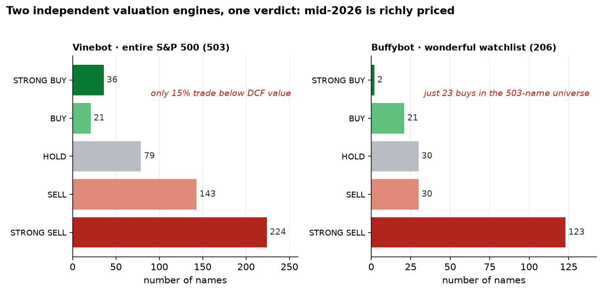
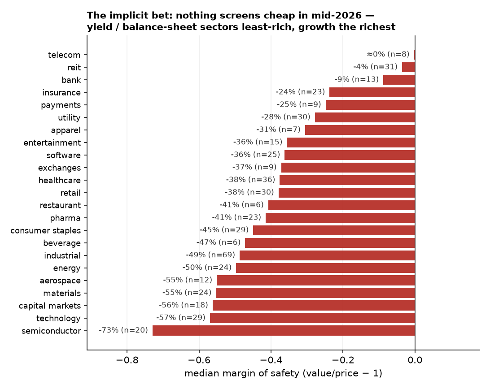
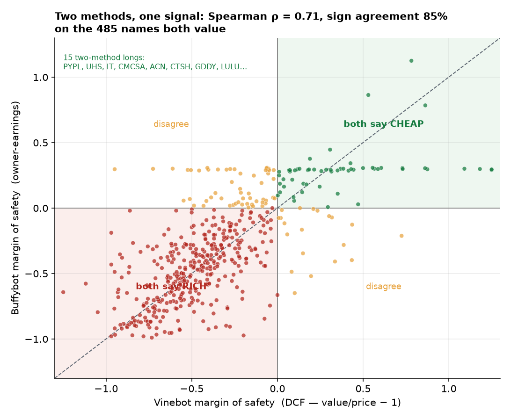

The first eight papers hunted systematic risk premia — paid for providing insurance, liquidity, or financing. This one turns to the thing the quant tradition says a machine cannot do: discretionary fundamental valuation, security by security. We built two bots that value the entire S&P 500 every day. Vinebot is a Damodaran-style intrinsic-value engine that prices everything — a coherent business story drives four value drivers, routed to the right model (FCFF DCF, residual income for balance-sheet firms, FFO for REITs). Buffybot is its opposite: a Buffett-style quality investor that rejects most of the universe through a purely quantitative moat gate and only values the survivors on conservative owner-earnings, waiting for a margin of safety. The defining design choice in both is anti-degeneracy: the language model never outputs a price target. It writes the narrative and sets a few assumptions, clamped to sane bounds; deterministic Python compiles them into value, so every number is auditable and reproducible. As of mid-June 2026 the two engines, built on different philosophies and different math, return the same verdict: the market is richly priced. Vinebot rates just 11% of the S&P 500 a buy and 73% a sell; Buffybot finds 206 wonderful businesses but only 23 of them cheap. More tellingly, they triangulate: across the 485 names both value, their margins of safety rank-correlate at Spearman 0.71 and agree on cheap-versus-rich 85% of the time, converging on 15 two-method longs. And yet we make no claim of skill — because an LLM analyst, uniquely, cannot be backtested: the model has already seen these companies' outcomes through its training cutoff, so any historical replay is contaminated by hindsight. The only valid test is forward, live, and slow. We pre-register it, show by a power analysis that it is a multi-year verdict, and start the clock. The contribution is an honest apparatus, not a Sharpe ratio.
This program has been, until now, a sustained argument against security selection. Paper 4 priced the cost of directional prediction and found it punishing; Papers 1–3 and 6 showed that what pays is providing something — variance insurance, funding, liquidity, roll — not forecasting which asset goes up. The durable edges were modest (~0.4 Sharpe), uncorrelated, and decaying, and the real work was rigor: deflated Sharpe, purged walk-forward, the probability of backtest overfitting. Stock-picking — the analyst staring at one company and judging whether it is cheap — was exactly the activity all that machinery was built to be skeptical of.
So this is a deliberate detour to the other side of the river. Large language models can now read a 10-K, assemble a business narrative, and reason about competitive advantage in a way no factor model can. The obvious question — can an LLM do the job of a fundamental analyst? — is being asked everywhere, usually badly: a chatbot is prompted for a "price target," it confabulates a number, and the number is treated as analysis. We wanted to ask it properly. That requires two things the chatbot version lacks: a discipline that stops the model from hallucinating the answer, and an evaluation that can actually tell skill from luck. This paper is about building both, and about an uncomfortable fact that falls out of the second: the standard tool of this entire series — the backtest — is unavailable here, for a reason specific to language models.
Paper 8 automated the researcher (a machine that writes strategy code). Paper 9 automates the analyst (a machine that makes the discretionary judgment). Both ask whether the LLM can take over a human role in markets; both arrive at the same destination from opposite directions — the model is a powerful hypothesis generator, and rigor, not the model, is what stands between a plausible story and a real edge.
The two bots share a spine and split on philosophy. The spine is the answer to the degenerate-model trap that recurs throughout this series: never let the flexible component produce the conclusion. Here the flexible component is the LLM, and the rule is that it outputs assumptions, Python computes value.
Vinebot follows Aswath Damodaran's [1] doctrine that every asset has an intrinsic value and the analyst's job is to estimate it honestly: a credible story disciplines the numbers. A frontier model (Claude sonnet for the batch, opus for the day's marquee name) reads fundamentals and news and returns a JSON object: a two-to-four-sentence business narrative plus four value drivers — revenue growth, target operating margin, reinvestment efficiency (sales-to-capital), and risk (beta, failure probability). It is told the rules it may not break (terminal growth never exceeds the risk-free rate; margins converge to sustainable economics, not peaks; reconcile with the market). Then a deterministic engine takes over. Each driver is clamped to a defensible range — terminal growth to $[-3\%,\ r_f]$, beta to $[0.5, 2.2]$, margins to $[-10\%, 70\%]$ — and the value is compiled explicitly:
$\text{FCFF}_t = R_t\,m_t\,(1-\tau) - \dfrac{R_t - R_{t-1}}{s2c}, \qquad V_0 = \sum_{t=1}^{H}\dfrac{\text{FCFF}_t}{(1+\text{WACC})^t} + \dfrac{\text{TV}_H}{(1+\text{WACC})^H} - \text{net debt}.$
Crucially, the bot routes each company to the right model, because a single DCF mis-handles balance-sheet businesses. Operating firms get the FCFF DCF above; banks, insurers, lenders, capital-markets firms, regulated utilities and capital-intensive issuers get a residual-income (excess-return) model, $V = B_0 + \sum (\text{ROE}_t - k_e)\,B_{t-1}/(1+k_e)^t$, where ROE fades to a durable premium over the cost of equity [4]; REITs get an FFO/AFFO model on cash flow rather than GAAP earnings. The margin of safety is $(V_0 - P)/P$, mapped to a STRONG BUY…STRONG SELL rating. Coverage marches through the index a sector-balanced batch a day, and a full-sweep job values every name; the result is a live, auditable valuation of all 503 constituents.
Buffybot inverts the stance. Following Graham–Dodd and Buffett's owner-earnings idea [2][3], it assumes most businesses are un-valuable — too unpredictable to forecast — and that the analyst's edge is the discipline to wait. Before any LLM is invoked, a deterministic quality gate scores each company 0–100 purely from the numbers: level and consistency of returns on capital (30 + 22 points), margin stability as a proxy for pricing power (16), balance-sheet strength (16), cash conversion (10), and share-count discipline (6). Hard disqualifiers — negative equity, sub-hurdle returns, leverage above a ceiling, recurring losses — send a name straight to the "too hard" pile regardless of score. Only survivors enter the watchlist of wonderful businesses; the LLM then reads the quality dossier and judges what a spreadsheet cannot — the moat and its durability, the circle of competence, management's capital allocation — and sets one number, a conservative normalized owner-earnings growth. Python capitalizes owner earnings (net income + D&A − maintenance capex) at that growth, discounted at the higher of CAPM cost of equity and a fixed opportunity-cost hurdle, and only flags a buy at a real margin of safety. Most days there is nothing to do. That is the design working, not failing.
The two are siblings by construction — Buffybot reuses Vinebot's data layer, gateway, store, and serving — so any difference in their verdicts comes from method, not plumbing. That makes them a controlled experiment in machine valuation, which §4 exploits.
Run across the whole index (Vinebot's full sweep dated 2026-06-23; Buffybot's 2026-06-24), the two engines deliver a strikingly concordant macro read: there is very little cheap (Figure 1). Vinebot rates only 57 of 503 names (11.3%) a buy and 367 (73.0%) a sell; just 15.1% trade below the bot's estimate of DCF value, and the mean margin of safety is −0.36. Buffybot, scanning the same universe, finds 206 wonderful businesses (41% clear the quality gate) — but of those, only 23 are cheap enough to buy (4.6% of the universe), while 123 of the 206 are outright richly priced. Two engines, opposite philosophies, one verdict: quality is abundant in this market; cheap quality is not.

The shape of the cheapness is just as telling (Figure 3). Sorting Vinebot's median margin of safety by sector, no sector screens cheap — every median is negative — but the ordering is a coherent value-and-balance-sheet tilt. The least-rich corners are yield and balance-sheet businesses: telecom (≈0%), REITs (−4%), banks (−9%), insurers (−24%), payments and utilities. The richest are exactly where the 2024–26 enthusiasm concentrated: semiconductors (−73%), broad technology (−57%), capital markets, materials, aerospace, and energy. Whatever skill these bots may or may not have, this chart says plainly what they are implicitly betting on — and §7 returns to why that matters for how we would ever benchmark them.

The one thing we can measure rigorously today is internal: when two independent valuation methods look at the same company, do they agree? They do, and more than chance would allow. Across the 485 names both bots assign a numeric value, the margins of safety rank-correlate at Spearman $\rho = 0.71$ and agree on the basic cheap-versus-rich call 84.5% of the time (355 both-rich, 55 both-cheap, only 75 disagreements; Figure 2). This is a non-trivial result: a discounted-cash-flow engine and an owner-earnings engine — with different inputs, different discount rules, and a quality gate in front of one of them — are not just both bearish in aggregate, they rank the same names the same way.

Where they converge on the upside, the overlap is a watchlist worth naming. Fifteen companies are simultaneously a Vinebot buy and a Buffybot buy from inside its wonderful-business set (Table 1) — names that pass a quality gate, clear an owner-earnings margin of safety, and look cheap on an independent DCF. These are the highest-conviction longs the system can produce, precisely because two unrelated methods had to agree.
| Ticker | Company | Vinebot MOS | Buffybot MOS | Quality |
|---|---|---|---|---|
| PYPL | PayPal | +1.65 | +0.29 | 85 |
| UHS | Universal Health Services | +1.63 | +0.29 | 69 |
| IT | Gartner | +1.18 | +0.30 | 94 |
| CMCSA | Comcast | +0.86 | +0.78 | 70 |
| ACN | Accenture | +0.73 | +0.30 | 89 |
| CTSH | Cognizant | +0.61 | +0.31 | 81 |
| GDDY | GoDaddy | +0.59 | +0.30 | 82 |
| LULU | Lululemon Athletica | +0.57 | +0.30 | 95 |
| SOLV | Solventum | +0.50 | +0.31 | 73 |
| BR | Broadridge Financial | +0.44 | +0.29 | 75 |
| CF | CF Industries | +0.38 | +0.30 | 85 |
| ADBE | Adobe | +0.32 | +0.28 | 96 |
| INTU | Intuit | +0.31 | +0.29 | 79 |
| ACGL | Arch Capital | +0.31 | +0.45 | 85 |
| DECK | Deckers Brands | +0.26 | +0.28 | 97 |
One honest caution, because it is the whole point of this series. Agreement is not correctness. Two methods can share a bias as easily as a truth — and these two share plenty: the same yfinance fundamentals, the same discounted-cash-flow worldview, the same instinct to penalize a high multiple. A Spearman of 0.71 is consistent with both engines being two implementations of the same value factor. Figure 3 all but says so. So triangulation buys us internal consistency and reproducibility; it does not buy us alpha. For that we need a forward test — and here we hit the wall.
The natural next move, everywhere else in this program, would be a backtest: run the bot "as of" each historical date, value the universe, and measure whether cheap-rated names beat expensive ones. For a language model, this test is invalid, and not fixably so.
The reason is look-ahead of a kind no purge or embargo can remove. When the model values a company "as of 2019," it already knows — from training data running years past 2019 — how the company actually did: the margin it printed, the product that failed, the multiple it re-rated to. Its "forecast" is contaminated by hindsight it cannot un-know. Worse, the contamination is unauditable: there is no log of what the weights memorized, and instructing the model to "pretend it is 2019" is unreliable — models leak future knowledge through exactly the channels that make them good. A historical replay of an LLM analyst therefore measures memory, not foresight, and flatters skill in a way that cannot be corrected. This is the mirror of Paper 8's lesson. There, the danger was a strategy fit to a window; the fix was widening the window. Here the danger is a model fit to the entire past, and there is no window left to widen — the only uncontaminated data is data that does not yet exist.
So the only valid evaluation is genuinely forward: value today, wait, mark to what happens next. Both bots are built for exactly this. Every rating is a tracked call that opens when the rating bucket changes and stays open until it changes again; performance measures each call's dividend-adjusted return from entry over 7/30/90-day horizons and since-open, benchmarked against SPY, direction-adjusted so a correct SELL counts as a win. It is honest by construction — and, as of this writing, empty of signal: the live history is days old, so every horizon is essentially unfilled. Any performance number quotable today is noise, and we quote none.
How long until it isn't noise? A power analysis sets expectations, and they call for patience. Treat the long-short portfolio implied by the ratings as one return series with Sharpe $S$; to reject $S=0$ at $t\approx2$ needs $t = S\sqrt{T}$, i.e. $T \approx (2/S)^2$ years. A standalone $S=0.3$ book would need ~44 years; even a generous $S=0.5$ needs ~16. What rescues the test is breadth. By the fundamental law of active management [5], $\text{IR} \approx \text{IC}\cdot\sqrt{N}$: with a cross-section of ~500 names re-rated continuously, a small but stable per-name information coefficient compounds into a usable portfolio IR, and the cleanest early read is the cumulative cross-sectional IC — the rank correlation of margin of safety with forward return — which gains power from names and time at once. Realistically this still means a multi-year verdict, quite possibly never if there is no edge. That is the honest timeline, and we have started the clock; the live scorecards update daily and will be published as they fill.
What can we claim, and what can't we? We can claim a disciplined, auditable, reproducible valuation apparatus: two LLM analysts that cover an entire index every day, that never hallucinate a price target because the model is confined to clamped assumptions while deterministic Python does the arithmetic, that route each business to the right model, and that — built on opposite philosophies — triangulate at Spearman 0.71 and converge on a nameable short-list. We cannot claim skill. Not yet, and not by any backtest, for a reason peculiar to language models: the analyst has already read the future.
The right way to use an LLM as a fundamental analyst is to forbid it the conclusion and demand the assumptions — and then to admit that proving it works is a forward problem measured in years, not a backtest measured in an afternoon. The apparatus is the deliverable; the verdict is pending, and pending honestly.
That is a fitting place for this series to arrive. Eight papers argued that in liquid markets the edge is not prediction but provision, and that rigor — not the signal — is the asset. Paper 9 points the most powerful prediction machine ever built at the most prediction-heavy task in markets, and the same discipline applies without flinching: constrain the model so it cannot grade itself, benchmark against the factor it is secretly loading on, and trust only what survives a window the model was not born into. For an autonomous strategy in Paper 8, that window was more historical data. For a machine analyst, it is the future. We will keep both bots running, in public, and let the only uncontaminated data there is — tomorrow's — return the verdict.
The benchmark problem is the deep one. Figure 3 shows the bots are implicitly long cheap, low-multiple, balance-sheet-heavy sectors. If the forward track record is positive, the burden is to show it is more than value beta — the honest null is not the S&P 500 but a matched value/quality factor, and the bots must beat that, net of turnover, to have earned the word "alpha." Data quality. Fundamentals come from a free feed (yfinance / EDGAR); restatements, mis-mapped sectors, and stale TTM figures inject noise the polished narrative can hide. Nondeterminism. The LLM runs at non-zero temperature, so two runs of the same name can set different drivers; the clamps bound the damage but day-to-day rating churn is real and must be measured, not assumed away. Selection at index scale. Five hundred names re-rated daily is a multiple-comparisons machine; breadth aids statistical power but also guarantees some calls look brilliant by luck — the cross-sectional IC, not a hand-picked winner, is the object to track. Capacity and cost. The universe is large-cap and liquid, so capacity is not the binding constraint; the cost is compute — every valuation is tokens — and "alpha per dollar of inference" is a real metric we have not yet booked. Future work. Beyond simply letting the scorecards fill: benchmark the long-short against an explicit value factor; add a contamination probe (re-value a set of names with their identities masked, to gauge how much of the verdict is memory versus reasoning); and, if a forward edge survives all of it, fold a capacity-aware equity sleeve into the live book of Paper 7. Until then, the machine analyst is a well-built instrument with an honest dial reading not yet measurable — which, in this program, is a respectable place to stand.